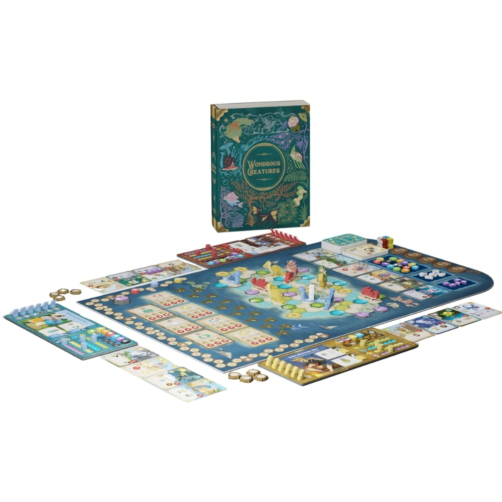
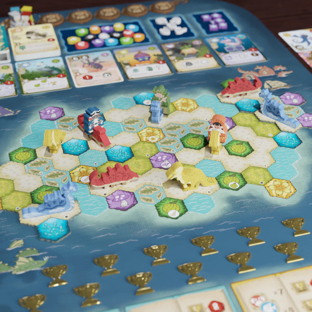
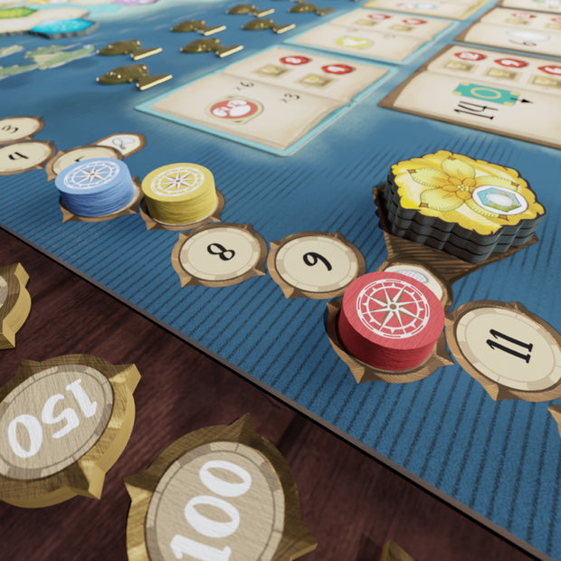

Wondrous Creatures:
Busy, But Not Deep Enough
On learning cost, card diversity, and complexity that does not fully pay for itself.
1. When a Pretty Engine Starts to Feel Heavy
The problem with Wondrous Creatures is not that it is complex. The problem is that the complexity feels expensive: the game asks for a lot of attention at the input end, but the decisions it returns often remain at the level of small arithmetic.
Wondrous Creatures makes a strong first impression. It has a charming creature theme, attractive production, a large deck of creature cards, eggs, achievements, captain powers, resource management, recall timing, and a two-space worker placement system that looks fresh on the table. From a distance, it seems to promise the pleasure of a rich modern engine game.
That promise is not fake. There is real craft here. The board gives players many small opportunities, the creature cards create moments of discovery, and the achievement race gives the table something to watch besides personal efficiency. But after playing, the feeling that stayed with me was not wonder. It was fatigue.

I kept calculating. Which worker position gives one more resource? Which card can I barely afford? Can this egg satisfy an achievement? Is it time to recall? Does the market have anything I can use? The game kept giving me problems to solve, but most of them felt local, tactical, and low to the ground.
1.1 The Problem Is Not That It Asks Me to Think
This distinction matters. I do not dislike games that ask players to calculate. A good board game often is a machine for making calculation meaningful. The pleasure can come from weighing route efficiency, timing a conversion, delaying a reward, or choosing one painful commitment over another.
What bothers me is calculation that stays on the surface. A game can make me busy without making me feel that I am operating at a high strategic level. I may spend a full turn optimizing details and still feel that the decision was only about losing slightly less, gaining one extra icon, or squeezing out one more resource.
1.2 High Calculation, Low Altitude
That is the phrase that best describes my experience: high calculation, low altitude. The game has many things to read and many small efficiencies to compare, but it does not often force the kind of structural choice that makes a heavier game satisfying.
A deeper strategic game might ask: should I change route now? Should I sacrifice short-term tempo for a later engine? Should I fight for a public goal even if it damages my plan? Should I commit to a build that only pays off after several turns? These questions create tension because they reshape the whole game.
In Wondrous Creatures, the questions I faced more often were smaller: which spot is slightly better, which card is currently playable, which achievement is barely reachable, and which resource gap is least annoying. These are valid decisions, but they rarely made me feel that I was discovering a powerful system.
The game made my brain busy, but it did not often make my plan feel ambitious.

2. A Card Engine Without Enough Route Stabilizers
The most important issue is not randomness by itself. Randomness can be exciting when a game gives players tools to shape it. The problem is that Wondrous Creatures has a card pool that asks for combo planning, but does not give me enough stable ways to plan those combos.
2.1 Diversity Turns into Noise
A large and varied deck can be a great source of replayability. It can support adaptation, discovery, and different routes. But card diversity is not automatically depth. The more varied the deck becomes, the more the game needs strong card flow, broad market access, search, flexible costs, loose tags, or some way to turn unwanted cards into useful movement.
Without those stabilizers, variety starts to feel like noise. The player is not asking, "How do I assemble the engine I am planning?" The player is asking, "What can I do with whatever happened to appear?" That is not the same kind of play.
2.2 Building Becomes Scavenging
This is where the game often disappointed me. A card-engine game usually becomes satisfying when early pieces prepare later pieces: A makes B cheaper, B makes C stronger, C turns D into a payoff. Even if the exact plan changes, the player feels they are building a direction.
In Wondrous Creatures, I often felt closer to scavenging than building. The market offers a limited window. The resources required by future cards are uncertain. Species and habitat needs may or may not align with the achievements in reach. Sometimes the best result is not a clever combo, but simply managing to play a creature at all.
That is a dangerous place for an engine game to land. If the system visually promises combo construction, but the actual play often becomes opportunistic patchwork, the player can feel that the game is withholding the fun it advertises.
2.3 The Missing Buffer
I think the game lacks enough route stabilizers. A diversified card game usually needs at least one strong buffer: abundant card draw, a wide public market, reliable search by type, flexible resources, generous tag matching, useful discard conversion, or long-term goals that remain valuable even when the perfect card does not appear.
Wondrous Creatures has achievements, and those achievements do give direction. But direction is not the same as control. A goal can tell me where I want to go, while the card market and resource system still fail to give me a stable road toward it.
That creates the strange feeling of planning without enough planning power. The game says: build a route, find synergies, chase achievements. The system often says: here are a few cards and a few resource gaps, please improvise.

3. The Comparisons It Invites and Cannot Afford
The easiest way to explain the mismatch is through neighboring games. Wondrous Creatures can feel as if it borrows the component density and card pressure of heavier games, while its eventual decision ceiling sits closer to lighter personal-engine games. That combination is what makes the complexity feel uneconomical.
3.1 Ark Nova Lets Preparation Stay Useful
Ark Nova also has a large deck and a significant learning curve, but its systems give players more ways to prepare usefully. Money is a broad resource. Enclosures can be built before the exact animal appears. Association actions, conservation projects, action-card upgrades, map development, and icon planning all create long-term handles.
Even when the perfect card does not arrive, a player can still do things that are probably useful later: improve income, prepare space, upgrade tempo, secure institutions, or pivot toward a conservation path. Its complexity creates several layers of strategic tension.
That is the difference. Ark Nova can ask me to learn more because it later lets me do more with what I learned. Its heavy front end pays rent through painful long-term choices. Wondrous Creatures asks for a noticeable amount of reading and tracking, but too often pays me back with local efficiency puzzles.
3.2 Wingspan Is Lighter Because It Knows Its Ceiling
Wingspan has a lower ceiling, but it is more honest about that ceiling. Its action structure is clear: play birds, gain food, lay eggs, draw cards, and let habitats improve over time. Its combos are usually not so precise that the whole game collapses if one specific bird does not appear.
That makes its limitations easier to accept. If Wingspan becomes a gentle personal engine puzzle, that is largely what it presented itself as. The learning cost is restrained enough that the ceiling does not feel like a betrayal.
Wondrous Creatures is more awkward. It feels like a heavier entrance into a similar kind of personal-engine satisfaction. It is not really Ark Nova-lite. It is closer to Wingspan-plus, and too much of that plus lands on rules, icons, card reading, and resource arithmetic rather than on deeper strategic life.
3.3 Forest Shuffle Makes Card Flow Part of the Game
Forest Shuffle is useful as a different comparison because it also has varied cards and combo incentives, but its card flow is much better integrated into the experience. Cards are not only things you play; they are also part of the cost system. Unwanted cards can move into a public clearing and become opportunities for other players.
That design turns card variety into a moving information stream. You see more cards, you cycle unwanted cards, and the shared space becomes a second market with memory and timing. A card that is useless to me is not simply dead weight; it can still push the system forward.
This is the kind of compensation a diverse deck often needs. When the deck is broad, players need ways to process that breadth. Otherwise variety stops feeling like possibility and starts feeling like interference.
4. Complexity Has to Pay Rent
This is why my final criticism is not that Wondrous Creatures is badly designed. It is that its complexity structure does not feel economical enough. It puts a lot of weight on the input side: many cards, many icons, many resources, many positional rewards, many achievement conditions. But not all of that weight becomes high-level decision space.
4.1 Who This Game May Still Serve
I can still see the audience for it. If someone enjoys beautiful production, medium-weight engines, indirect competition, achievement races, and constant small optimization, this game may hit a comfortable place. The two-space worker placement system has novelty, and the game gives players something to do nearly every turn.
It may also work well for groups that want something heavier-looking than Wingspan but shorter and less strategically punishing than Ark Nova. In that space, its charm and component presence matter.
But that does not erase the problem for me. A game can be pleasant and still be inefficient. It can have attractive pieces and still make me question whether the mental load is buying enough depth.
4.2 When Fatigue Does Not Become Satisfaction
My experience of Wondrous Creatures can be summarized like this: the card pool feels like a construction game, the action system feels like an efficiency Euro, and the resource system often feels like a guessing problem. The result is not emptiness. The result is busyness without enough height.
I kept making calculations, but they rarely became a plan I felt proud of. I kept solving turns, but I rarely felt that I was growing a system with real upper-limit pressure. I was thinking often, but too much of that thinking was about how not to waste the moment in front of me.
Its complexity is mostly crowded at the entrance. The room beyond that entrance is not quite large enough.
I do not mind a medium-heavy game making me tired. In fact, that is often part of the appeal. The important question is what the tiredness turns into. Does it become a sharper route, a painful commitment, a surprising engine, or a sense that mastery opens new space?
Wondrous Creatures made me tired. It did not fully convince me that the tiredness had become depth.